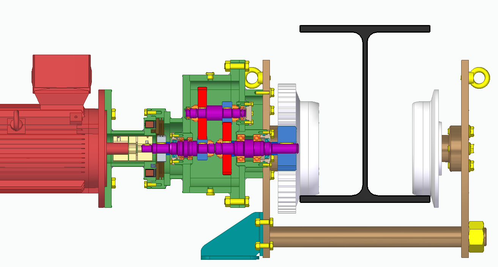
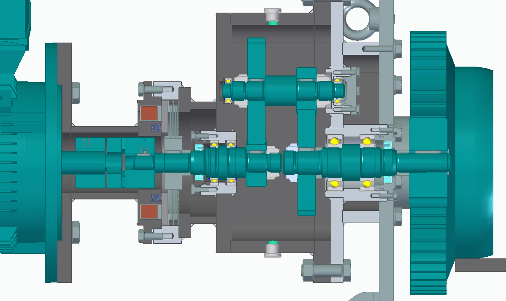

Projects/Gearbox design
Bachelor's coursework, grade 1.3
Gearbox design
We designed a gearbox for a crane trolley that runs on a rail, in a team of three. It connects the motor, shafts, gears, bearings, housing and driven wheel.

